Today
By the end of the day you can say what today’s vision systems do well and where they fail, and explain why we look to human vision to get past those limits. You know what a project can look like. You recover the 3D shape of a simple scene from one image by writing its assumptions as equations. And you can tell a research question from a building project, and read a paper efficiently.
- Five minutes on the plan for the next three weeks, and how you are graded.
- About thirty minutes of motivation: what works, and where it still fails.
- Ten minutes on your project.
- About an hour on the lab.
- Twenty minutes to close: research versus building, how to read a paper, then Pizlo.
The next three weeks
Everything lives on the course website.
- Week one, understanding images. How images encode visual information, and how we pull structure out of pixels.
- Week two, learning visual representations. Neural networks, transfer learning, embeddings, and vision-language models like CLIP.
- Week three, building vision systems. Foundation models, detection and segmentation, multimodal systems, image generation, and how to evaluate where a system fails. Then the final project.
Each day has a question, what you will be able to do by the end, a reading, a lab, and a link to human vision. The schedule may shift a little as we go.
How you are graded
- Final project, 45%. The proposal, the write-up, and the presentation on the last day.
- Daily response papers, 24%. Twelve of them. Each has one question about the day’s paper and three about the take-home lab. You write the response by hand, in the first few minutes of class.
- Two assignments, 15% each.
- 1% for one short question on the last day.
Assignments go through Google Forms: your name, your AIMS email, and one file, a notebook or a PDF.
What computer vision can do now
The course does not teach each of these tools. It teaches the fundamentals they are built on, so you can understand them, use them, and see where they break. The failures later in the lecture are open problems you could work on.
From photos to 3D · VGGT
VGGT, from Meta AI and Oxford (CVPR 2025), turns a few photos of a scene into where each camera was, the depth of every pixel, and a 3D point cloud, typically in under a second. Before this, getting 3D from a set of photos meant a long chain: match points between images, solve for the cameras, then refine everything with an optimization that could take minutes. VGGT does it in one pass of one network. The ideas underneath, image geometry and matching points across images, are week one.
Learning to see without labels · DINOv3
DINOv3 learns visual features from images alone, with no labels. Trained on satellite images, those features map the height of the world’s trees (Canopy Height Maps, Meta and the World Resources Institute). Before, each new task needed its own pile of labeled examples. Learned features and transfer learning are week two.
An embedding of the planet · AlphaEarth
AlphaEarth Foundations (Google DeepMind, 2025) summarizes every 10 m square of land, each year, as 64 numbers, combining satellite, radar, 3D laser, and climate data. Mapping projects used to start over from raw satellite images, full of clouds and gaps. Embeddings, comparing things by their learned summaries, are also week two.
Segment anything you can name · SAM 3
SAM 3 (Meta, 2025) finds, outlines, and tracks every object that matches a short text phrase, in images and in video. Earlier segmentation models knew a fixed list of categories, or needed a click on each object. Detection and segmentation are week three.
Images and language
MedGemma 1.5 (Google, 2026) is an open model that reads medical images, including 3D CT and MRI and pathology slides, together with text. Before, medical imaging AI meant a narrow model for each kind of scan and each question.
Gemini Robotics 1.5 (Google DeepMind, 2025) looks at a scene, plans a task in steps, and controls a robot to carry it out. Skills learned on one robot transfer to robots with different bodies. Vision and language together are week three.
Generating worlds · Genie 4
Genie 4 (Google DeepMind, 2026) generates an interactive world from a text prompt, frame by frame as you move through it, with sound. A video generator makes a clip you watch. A world model makes a world you can move through and change. Image generation is week three.
The fundamentals, not the tools. Week one is image geometry and feature matching, underneath VGGT. Week two is learned features, transfer, and embeddings, underneath DINOv3 and AlphaEarth. Week three is detection, segmentation, vision and language, and generation, underneath SAM 3, MedGemma, Gemini Robotics, and Genie. The next tool will be out before the course ends. These fundamentals are how you pick it up.
Where it still fails
An elephant, called a triceratops
Most people, shown this photo, say an elephant, a statue of an elephant. ResNet-18, trained on ImageNet’s 1,000 categories, says triceratops at 29%, cowboy boot at 27%, then shield, chain mail, and armor. ImageNet does include elephants. Indian elephant comes ninth, at about 1%. This photo was chosen because the model gets it wrong. It is one example, not a failure rate.
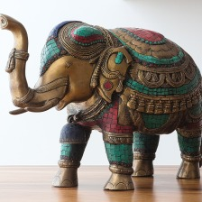
Questions a person gets right
Models that combine images and language can describe a photo in detail. Rahmanzadehgervi and colleagues, in “Vision language models are blind” (ACCV 2024), asked questions a child can answer: do two circles overlap, how many times do these lines cross, which letter is circled. Four of the best models of 2024 got 58% right on average. The best one got 78%. A person is expected to get all of them. Whether today’s models still fail, and why, is a question you could study.
A panda that becomes a gibbon
An adversarial perturbation is a small change to the input, optimized to change the network’s decision. Here it is about one step of an 8-bit image, 0.007, shown amplified so you can see it. Added to the panda, people still see a panda. The network goes from a correct classification to “gibbon,” with high confidence (Szegedy et al., 2013; Goodfellow et al., 2015). The same thing happens in sound: a perturbation about 56 dB below a spoken word leaves people hearing “director,” and the network says “center.” Tiny changes people cannot perceive change the model’s behavior. These oddities show up across many kinds of networks.
Texture, not shape
Geirhos and colleagues showed that networks trained on ImageNet recognize objects mostly by texture, while people, tested on the same images, go mostly by shape. Training the same network to rely on shape made it more accurate and more robust.
A quick version on our own photos, with the same ResNet-18: cut the image into pieces and shuffle them. The shape is gone. The texture is still there. Intact, the coffee is espresso at 86%. Shuffled into 16 pieces, the model says toilet tissue. Into 64 pieces, wardrobe. The elephant, intact, is triceratops. Shuffled into 16 pieces, sock, with cowboy boot still second. Into 64, wine bottle, then barrel and quilt. The guesses follow patterns on the surface. This is two photos and one shuffle, not a measurement. Testing it properly, on many images, against people, is the kind of question a project could take on.
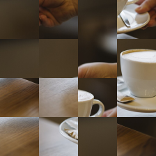
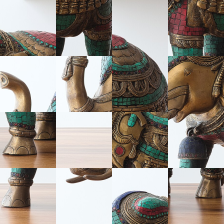
Why look to human vision
People still see better. Every failure above, you get right at a glance: the elephant, the panda, the scrambled coffee, and the questions about circles and lines. Seeing feels effortless, but the brain solves problems that are still unmatched by any artificial system.
Many of the tools in this course came from studying the brain. Color images with three channels. Filters modeled on cells in visual cortex that respond to spots and to edges at particular orientations. Neural networks themselves. Attention. You build some of these filters on Day 3.
Human perception also shows what to build, and how to test it. You can see a white triangle where none is drawn: the visual system groups the pieces and completes the shape. Principles like this shaped methods such as image segmentation, and they give tests for models. Does a vision model see the triangle?
Why the class is built around projects
The goal is to help you get from an idea to meaningful progress on that idea. Topics are covered at a high level, to inspire you, and so that you can harness them for your own purposes.
Where you are starting
Fourteen people answered the Day 1 survey. Most are comfortable, or have some experience, with CNNs and image classification. Almost everyone has heard of image and video generation, vision transformers, and models like CLIP, and few have used them. That is where weeks two and three go.
You could pick more than one focus. Eleven want to understand the theory and methods. Ten want to build practical applications. Ten want to do research and exploration. Four want creative experimentation. The project is where all four meet.
The ideas you sent include climate and the environment (flood mapping, waste in the ocean, downscaling climate data), medical images, assistive and creative tools, going from 2D to 3D, and a video generator. These are projects you could build in three weeks with the tools the course covers.
A simple vision system
In the lab you recover the 3D shape of a simple scene from one image, by writing its assumptions as equations. The lab follows Chapter 2 of Torralba, Isola, and Freeman, Foundations of Computer Vision. Open the notebook in Colab.
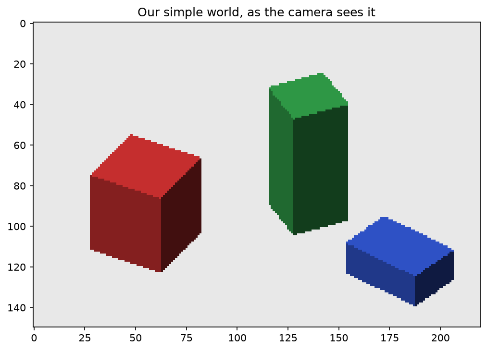
A summer project that was harder than it looked
In 1966, Seymour Papert at MIT proposed building a significant part of a visual system as a summer project, split among students (MIT AI Memo 100). It turned out to be much harder than anyone expected. Sixty years later we are still working on it. Early systems made the world simple first. Larry Roberts, in 1963, worked in a blocks world of simple geometric solids. Ours is in the same spirit: colored boxes on a white floor, simple enough to build a whole vision system by hand.
What the image throws away
The camera looks down at the floor at an angle θ of 35°. Light travels along parallel lines of sight and hits the image plane. A point at height Y and depth Z lands at
x = X, y = cos θ · Y − sin θ · Z.
Point 1, at height 20 and depth 0, lands at y = 16.38. Point 2, ten units higher and 14.28 nearer the camera, lands on exactly the same pixel. Every point on that line of sight does. Height and depth are mixed into one number. The image alone cannot tell us where things are. The problem is ill-posed. Recovering 3D means adding assumptions about the world. That projection is the first assumption, about the camera.
From the image to edges
To the computer the image is an array: rows, columns, and three color values. Average the colors and you get brightness. An edge is where brightness changes fast. With pixels, a derivative is the difference between neighbors: one subtraction of two shifted copies of the image. Red means brightness goes down to the right. Blue means it goes up. White means no change. Edges that run left to right nearly vanish in the horizontal derivative. They need the vertical one.
Combine both derivatives into an edge strength, and keep the pixels above a threshold you choose. Too low and you get noise. Too high and you lose the faint edges between two faces of the same box. Your turn 2 is one line: the image without its first column, minus the image without its last column. The result has one column fewer than the image.
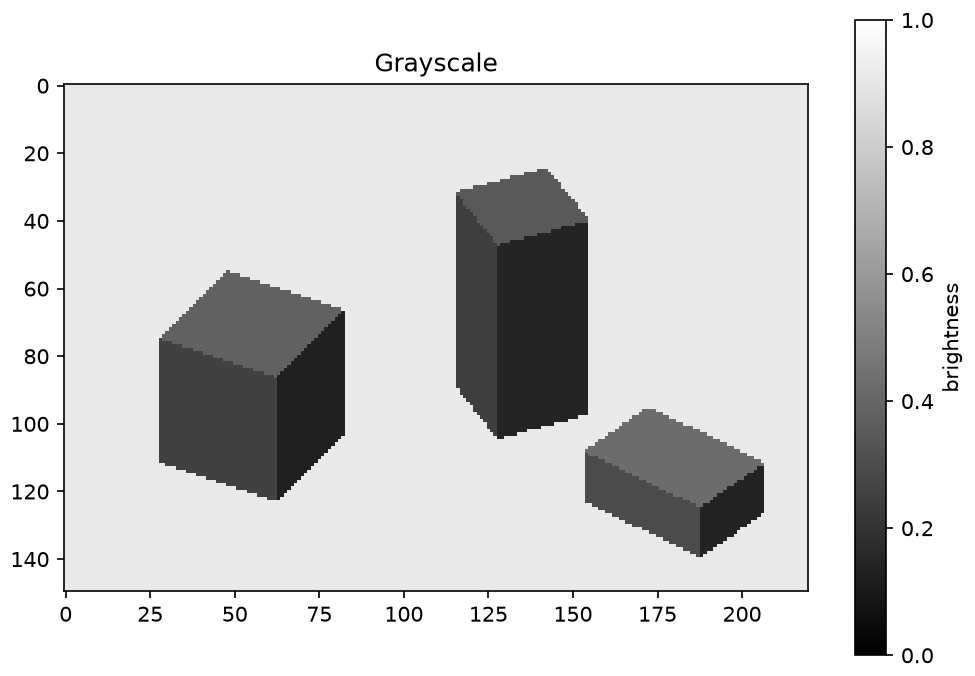
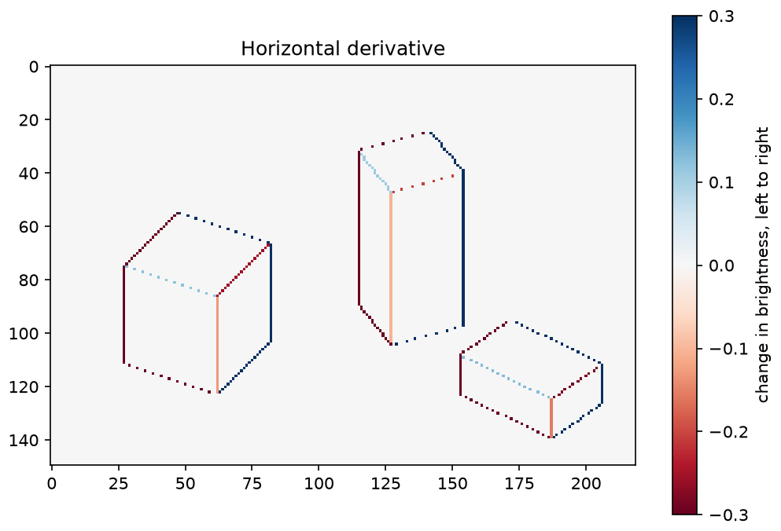
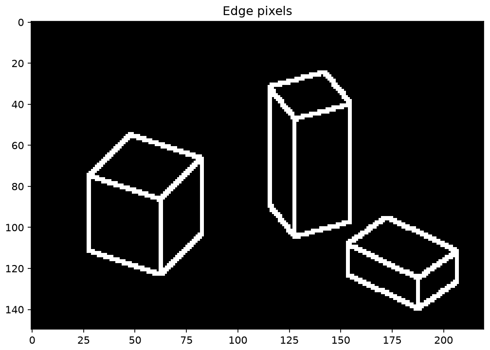
From assumptions to 3D
Each assumption becomes an equation about the unknown height of every pixel.
- The camera uses parallel projection.
- The floor is white.
- Boxes rest on the floor: floor pixels and contact edges are at height zero.
- Generic view: no lucky angle. Vertical edges rise. Horizontal edges keep their height.
- Faces are flat, which carries what we know at the edges into the plain regions in between.
That is about 45,000 equations for 33,000 unknown heights. They cannot all hold exactly, so we find the heights that break them the least: least squares. The tallest box is 70 units tall. The system recovered 68.6. The typical error on the boxes is about 3 units.
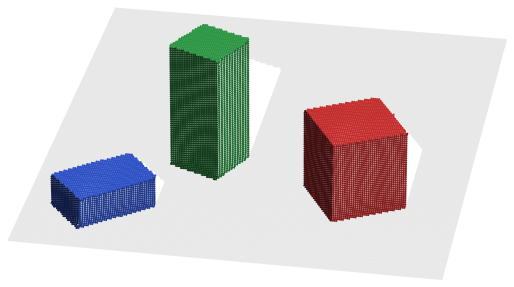
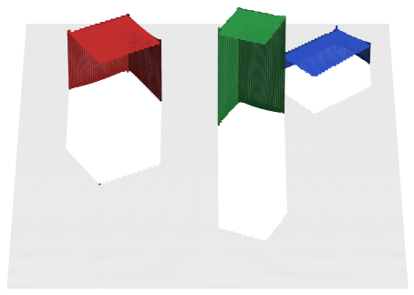
Each box is a shell with no back face. The white patches are floor the boxes hid from the camera. Nothing was recovered there. We only recover what the camera saw. The system has a height for every pixel, and no idea that the scene is made of boxes. It cannot count them, and it cannot guess the back of one from its front.
Priors: how the brain fills the gap
The system filled the gap with assumptions. The brain does the same. Helmholtz, in the 1860s, called ordinary seeing unconscious inference.
Look at shaded disks and most people see bumps. The image alone cannot decide. A bump lit from above and a dent lit from below make the same picture. Those two explanations fit the image equally well. That is the likelihood. The brain also knows that light usually comes from above. That is a prior: before you look, light from above is much more likely than light from below. Likelihood times prior, and one explanation wins: bumps, lit from above. Turn the picture upside down and the same prior says dents.
The box system works the same way. A white floor, boxes resting on it, a generic view, flat faces: those are its priors, written by hand. They let it pick one 3D world out of all the ones that fit the image. Like any prior, they can be wrong. A floating box comes out far too low, and nothing tells the system it is wrong.
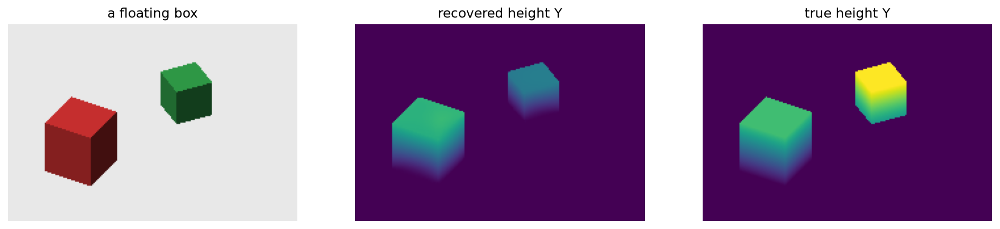
A world simulator
You knew the back of each box was there. The system did not. One idea from the brain: look at a tower of blocks and you can say, in a fraction of a second, whether it will fall. Your eyes give a slightly uncertain picture, so the brain considers many towers that could be out there, and runs each one forward, like a physics engine. The answer is a probability, not a yes or no. Battaglia, Hamrick, and Tenenbaum proposed this kind of intuitive physics engine in 2013. People’s judgments about towers followed a simulator with noisy perception. A world model like that knows that boxes are solid and need support, which our box system never knew.
What you built. Going from 3D to a 2D image loses a dimension. That is Day 1’s figure: many different 3D shapes give the same picture. Assumptions fill the gap. Together they are a world model, written by hand. Outside the world it was designed for, the system can be confidently wrong. A better world model can come from better assumptions, from more data, from learning, or from a model someone else trained. The rest of the course is about the last two. The questions stay the same: what does the system assume, and what happens when the world disagrees?
A research question, or a building project
- Mathematical or theoretical. How do we change the way these systems learn? Training on images where texture is unreliable, so the network learns shape, is an example. Shuffle the coffee photo and the network stops saying espresso.
- Exploring a limitation, or finding a new one. In which settings do these tools fail? “Vision language models are blind” is a paper of this kind: 58% on average, 78% for the best model, on questions a person gets right.
- Application. What is a useful way to apply these tools? Mapping tree height across the planet from satellite images is one.
On your project, building a useful application is the demo track. Exploring or overcoming a limitation, and answering with a measurement, is the experiment track.
How to read a paper
One method, from S. Keshav, has three passes.
- Five to ten minutes. Title, abstract, introduction, section headings, and conclusions. Skip everything else. You should know what kind of paper it is and what it claims. Often that is enough to decide whether to read on.
- Up to an hour, for an experienced reader. Read carefully, look hard at the figures, and follow the argument. Skip details such as proofs.
- For the papers that matter most. Virtually re-implement the paper, making the same assumptions as the authors, and see where you would have done something different.
Each daily response paper starts with one high-level question about the day’s paper. You write it by hand at the start of class. A good second pass is enough for that.
Perception as an inverse problem
Zygmunt Pizlo, “Perception viewed as an inverse problem,” Vision Research, 2001.
Perception is an inverse problem because the image does not determine the scene. Day 1’s line drawing fits infinitely many 3D shapes. In the box world, a small box nearby and a bigger one further away can make the same picture along a line of sight.
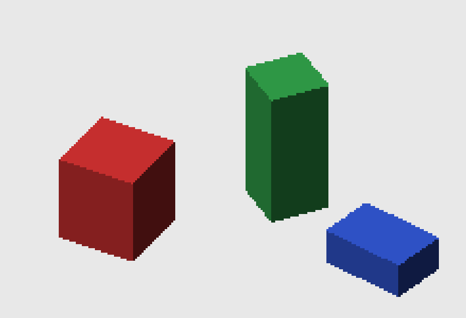
If the image is not enough, the missing information comes from constraints the visual system brings, a priori. Pizlo argues that those constraints matter at least as much as the image itself. With them, one image gives one 3D scene, like the one the lab recovered.
The simple vision system used a flat floor, objects resting on it, a generic view, and flat faces. The floating box is what happens when one of those constraints is false.
After class
- Finish the simple vision system notebook, or go further: extend it to a world of your own and see where it breaks.
- Read the primer on metamers. Things that are physically different can look exactly the same, which says something about what your visual system throws away. The primer sets up tomorrow. Your response paper on it is written by hand at the start of next class.
- By Friday night, send your general project ideas through the form. The link is on the project templates page.